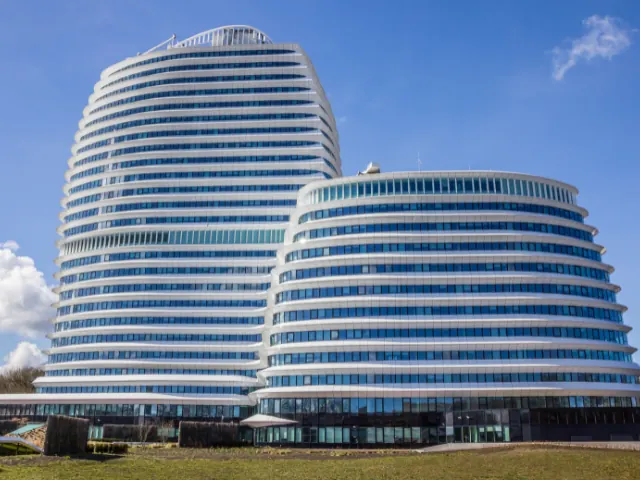

Eindejaar investeringen in SEO: Profiteer als ondernemer in Nijmegen van de KIA regeling
Gepubliceerd op 24 oktober 2024
Onderdeel van de gids Ondernemen in Nijmegen

Het einde van het jaar biedt ondernemers een unieke kans om strategische investeringen te doen, niet alleen voor de groei van hun bedrijf, maar ook voor fiscaal voordeel. Een van de meest effectieve investeringen die bedrijven kunnen overwegen, is in zoekmachineoptimalisatie (SEO). Deze investering kan onder de Kleinschaligheidsinvesteringsaftrek (KIA) vallen, wat betekent dat bedrijven fiscaal aantrekkelijk kunnen investeren in hun online vindbaarheid.
In dit artikel bespreken we hoe bedrijven kunnen profiteren van de KIA regeling door te investeren in SEO, de voordelen van SEO voor hun online zichtbaarheid, en waarom het einde van het jaar het perfecte moment is om deze stap te zetten.
Wat is de KIA regeling?
De Kleinschaligheidsinvesteringsaftrek (KIA) is een fiscale regeling die ondernemers in Nederland aanmoedigt om te investeren in hun bedrijf. De KIA biedt een belastingvoordeel voor investeringen tussen €2.600 en €353.973 (bedragen 2023). Dit betekent dat een percentage van het investeringsbedrag in mindering wordt gebracht op de winst, wat leidt tot minder belastingafdracht.
Voor ondernemers die nadenken over strategische investeringen aan het einde van het jaar, is de KIA regeling een waardevol hulpmiddel om fiscaal voordeel te behalen. SEO kan worden beschouwd als een investering die valt onder deze regeling, vooral als het gaat om langdurige digitale marketingstrategieën die gericht zijn op de groei van het bedrijf.
Weet je dat je facturen met een waarde boven de €450 al kunt opgeven voor de Kia regeling?
Voordelen van de KIA regeling:
Belastingaftrek: Je kunt een deel van je investeringsbedrag aftrekken van de winst.
Lagere belastingdruk: Door de aftrek betaal je minder inkomsten of vennootschapsbelasting.
Flexibel toepasbaar: De regeling geldt voor veel soorten investeringen, waaronder digitale diensten zoals SEO.

Waarom nu investeren in SEO?
Zoekmachineoptimalisatie (SEO) is de sleutel tot een sterke online aanwezigheid. In een tijd waarin consumenten vooral online zoeken naar producten en diensten, is het van cruciaal belang dat jouw bedrijf goed vindbaar is in zoekmachines zoals Google. Het verbeteren van je positie in zoekresultaten betekent meer verkeer naar je website, wat kan leiden tot meer leads en hogere omzet.
Het einde van het jaar is een uitstekend moment om in SEO te investeren, niet alleen vanwege de fiscale voordelen van de KIA regeling, maar ook omdat je zo een voorsprong hebt voor het nieuwe jaar. De effecten van SEO zijn meestal zichtbaar op de lange termijn, dus door nu te investeren, kun je volgend jaar al de vruchten plukken.
Voordelen van investeren in SEO:
Verbeterde zichtbaarheid in zoekmachines: Hogere posities in zoekresultaten leiden tot meer verkeer naar je website.
Langetermijnvoordelen: SEO blijft waarde toevoegen, zelfs nadat de initiële investeringen zijn gedaan.
Meer organisch verkeer: Organisch verkeer is vaak betrouwbaarder en converteert beter dan betaald verkeer.
Concurrentievoordeel: Een sterke SEO strategie kan je helpen om boven je concurrenten te scoren.
De voordelen van SEO als eindejaar investering
SEO is een uitstekende eindejaar investering omdat het je niet alleen helpt om fiscaal voordeel te behalen, maar ook je digitale aanwezigheid versterkt. Door gebruik te maken van de KIA regeling kun je investeren in een SEO strategie die je bedrijf voorbereidt op het komende jaar. Hier zijn enkele van de belangrijkste voordelen van SEO als eindejaar investering:
Langdurig rendement op investering (ROI)
SEO is een investering die zich over een langere periode terugbetaalt. In tegenstelling tot betaalde advertenties, die stoppen zodra je budget op is, blijft SEO zijn effect behouden zolang je website goed geoptimaliseerd is. Een goede SEO strategie zorgt ervoor dat je website hoger blijft scoren in zoekmachines, wat resulteert in een constante stroom van organisch verkeer.
Hogere concurrentiepositie
In sectoren waar concurrentie hevig is, kan een sterke SEO strategie ervoor zorgen dat jouw bedrijf boven de concurrentie uitsteekt. Hoe hoger je scoort in zoekresultaten, hoe groter de kans dat potentiële klanten jouw bedrijf vinden voordat ze de concurrentie tegenkomen. Dit voordeel kan vooral aan het begin van het jaar doorslaggevend zijn, wanneer veel bedrijven hun marketingstrategieën opnieuw vormgeven.
Betere gebruikerservaring
SEO gaat niet alleen over zoekmachines, maar ook over het optimaliseren van de gebruikerservaring. Een website die snel laadt, mobielvriendelijk is, en gemakkelijk te navigeren is, wordt niet alleen door Google beloond, maar ook door je klanten. Dit leidt tot hogere conversiepercentages en een betere reputatie van je merk.
Integratie met andere marketingkanalen
SEO werkt goed samen met andere marketingkanalen zoals content marketing, sociale media en e mailmarketing. Door te investeren in SEO, verbeter je de algehele prestaties van je digitale marketingstrategie. Dit geïntegreerde effect zorgt ervoor dat je op meerdere fronten succes boekt, wat resulteert in een betere zichtbaarheid en meer verkeer.
Door een SEO specialist in te schakelen, kun je profiteren van:
– Gerichte SEO strategieën die rekening houden met je bedrijfstak, doelgroep en concurrentie.
– Technische optimalisaties zoals het verbeteren van de snelheid van je website en het oplossen van technische fouten die je ranking beïnvloeden.
– Contentstrategie die ervoor zorgt dat je website waardevolle, geoptimaliseerde content biedt die zowel gebruikers als zoekmachines aanspreekt.
Wil je meer weten over hoe een SEO specialist in Nijmegen je kan helpen om je zichtbaarheid te vergroten? Ontdek meer over hoe een SEO specialist in Nijmegen je kan ondersteunen bij het optimaliseren van je website.
Kijk op https://www.bo5.nl/ voor meer informatie.